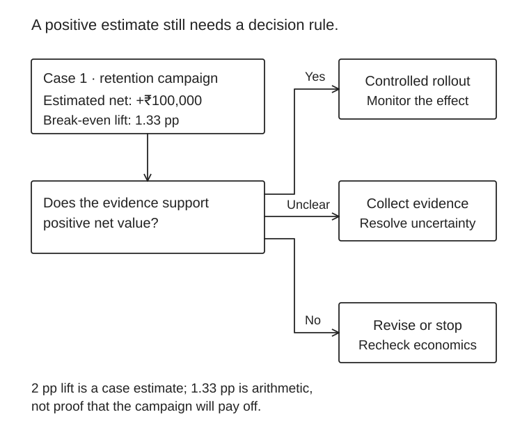

Interview practice: finance, data and decisions
Prepare for the work described in the posting. These original prompts target roughly two-year analytics candidates; they are not leaked employer questions.
Case 1 · Customer retention
A bank can contact 10,000 customers. A campaign costs ₹20 per customer. An experiment estimates an incremental two-percentage-point improvement in one-year retention. Assume ₹1,500 contribution per additionally retained customer, before campaign cost. Recommend whether to launch.
What a good answer covers
Expected incremental retained customers = 10,000×0.02 = 200. Contribution = ₹300,000; campaign cost = ₹200,000; expected net = ₹100,000. Break-even incremental retention is 20/1,500 = 1.33 percentage points. Ask for uncertainty around the effect, treatment assignment, sample size, contribution definition, contact constraints and segment differences. Recommend a controlled rollout if the evidence supports the economics, not an unconditional launch.

Case 2 · Credit policy
A cohort has 1,000 approved loans of ₹100,000 each. One-period PD is 2%, LGD 40%, and gross contribution before credit losses is ₹1,500 per loan. Estimate contribution after expected credit loss. What would you test before changing the approval threshold?
Answer guide
Expected loss per loan = 0.02×0.40×100,000 = ₹800. Remaining contribution = ₹700 per loan, or ₹700,000 total, before any costs excluded from the definition. Test calibration, cohort mix, adverse selection, macro stress and loss timing. Distinguish expected from realized loss. Compare marginal economics of newly approved customers, not just the portfolio average.
Case 3 · Budget variance
Planned revenue is 10,000 units at ₹100. Actual revenue is 9,000 units at ₹110. Explain the revenue variance in one sentence and propose the next analysis.
Answer guide
Actual revenue is ₹990,000 versus ₹1,000,000 planned: ₹10,000 unfavorable. Using planned price for volume variance and actual volume for price variance: volume contributes −₹100,000 and price +₹90,000. Investigate mix, discounting, capacity, customer retention and margin before recommending a price change. A higher average selling price does not establish improved profitability.
SQL drill · Customer-month balances
Given balances(customer_id, month, balance, loaded_at), there can be several loads per customer-month. Return the latest record, then month-on-month balance change. State your assumptions before writing SQL.
One PostgreSQL approach
WITH ranked AS (
SELECT *, ROW_NUMBER() OVER (
PARTITION BY customer_id, month
ORDER BY loaded_at DESC
) AS rn
FROM balances
), latest AS (
SELECT customer_id, month, balance
FROM ranked WHERE rn = 1
)
SELECT customer_id, month, balance,
balance - LAG(balance) OVER (
PARTITION BY customer_id ORDER BY month
) AS change
FROM latest;Assume unique load timestamps within customer-month. If they can tie, add a deterministic version key. The first row has no prior balance. A missing month makes LAG compare with the previous observed month, not necessarily the previous calendar month; join to a calendar when consecutive-month change is required. Reconcile row counts and totals before and after deduplication.
Six questions to rehearse aloud
- How can revenue rise while operating cash falls? Explain receivables, inventory and payment timing.
- Why does a bond price fall when its required yield rises? Use discounted cash flows.
- What is leakage in your project? Identify exactly when each feature becomes known.
- What would make you reject a model with better accuracy? Consider calibration, economics, stability, fairness and implementation cost.
- How would you explain a forecast miss? Separate assumptions, data, model and execution.
- What recommendation would you make with incomplete data? State uncertainty and choose a reversible next action.
The five-slide interview case
- Decision and financial stakes.
- Data, definitions and limitations.
- Baseline and alternative.
- Recommendation, economics and downside.
- Rollout, monitoring and what would change your mind.
Show one real impact story from your two years of work. Use a truthful structure: “I changed [system/process], measured [result], and helped [stakeholder] decide [action].” Avoid inventing revenue impact when you only measured model or infrastructure performance.
Next: eligible role shortlist · preparation plan.